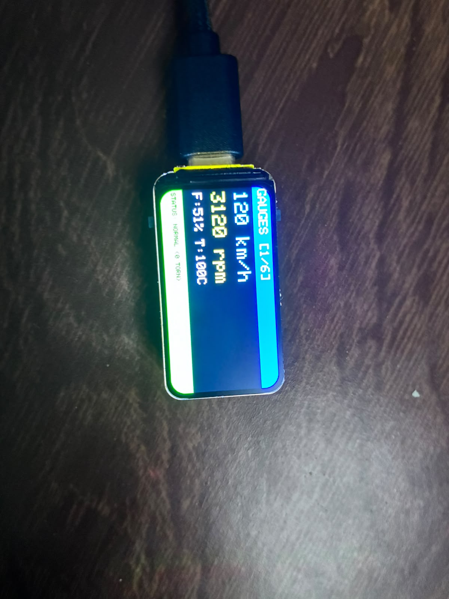

Protótipo de painel automotivo com Trampoline RTOS (OSEK/VDX) rodando em hardware real.
Equipe: Osvaldo Janeri Filho · Norton Dezonet · Vinicius Antunes
Réplica do display ST7789 de 1.47" (320×172, na horizontal), com as mesmas coordenadas, cores e ciclo de condução do firmware. Clique no nome de uma aba para trocar de tela. Na placa, as telas trocam sozinhas a cada 5 s.
Waveshare ESP32-C6-LCD-1.47 executando o firmware do dashboard.

A ESP32-C6 cria seu próprio Access Point. Siga os passos:
No celular ou PC, você verá gráficos interativos (Canvas), abas navegáveis e dados atualizados em tempo real via WebSocket.
# Instalar PlatformIO e gravar firmware
platformio run -d esp32_dashboard --target uploadCódigo-fonte, relatório técnico e evidências: github.com/ojaneri/ee-icm-trampoline